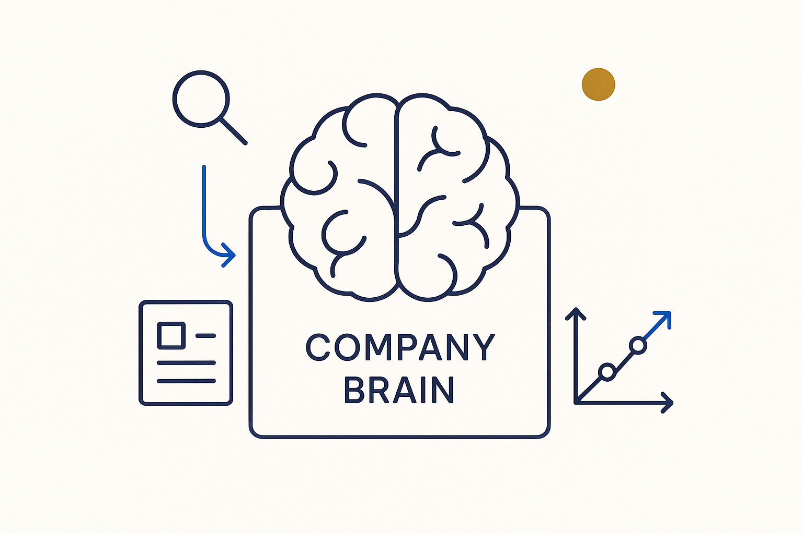

An organization's knowledge made queryable — structured, versioned metadata that people and systems can ask questions of, and that shows how it developed and where every fact came from.

> An organization's knowledge made queryable — structured, versioned metadata that people and systems can ask questions of, and that shows how it developed and where every fact came from.
The company brain is what the BTM pipeline builds toward: the organization’s knowledge, structured well enough that you can *ask it questions.* Not a wiki you scroll and a warehouse you query separately, but one connected, versioned body of metadata — the models, the rules, the transformations, the decisions, the explanations — that both people and systems can reason over. The knowledge that used to live in a few experts’ heads and a thousand documents becomes an asset the whole organization can consult.
Two properties make it a brain rather than an archive. It is queryable: via MCP servers, a business user or another system can ask a plain question and get a grounded answer, because the structure underneath is real. And it has memory and provenance: everything is logged and git-versioned, so you can see how the brain developed over time and trace the lineage of every fact back to its source — which document, which SQL, which interview it came from.
This is the payoff of treating everything as metadata first. A company brain compounds: every source captured, every gap filled, every interview added makes the next question easier to answer. It is the difference between an organization that *has* documents and one that *owns* its knowledge.
Where it lives: the signature principle of Breakthrough Modeling — the organization’s knowledge, queryable and provenanced.